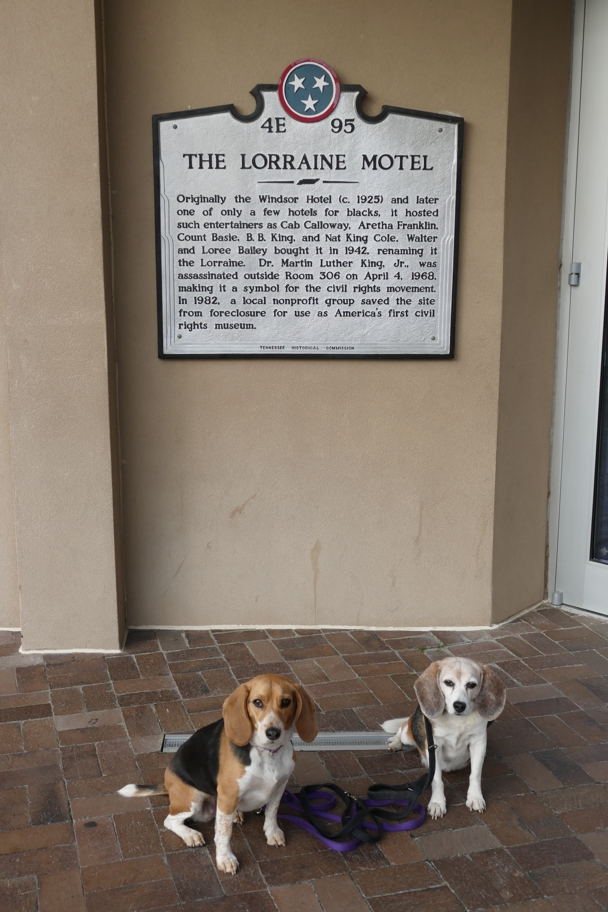

The area in front of the motel was accessible despite construction. Though the museum had closed for the day, there were signage and videos for background. Standing on the spot looking much like it did in 1968 is quite an experience.
Halley Beagle Memphis Tennessee Wallace Beagle